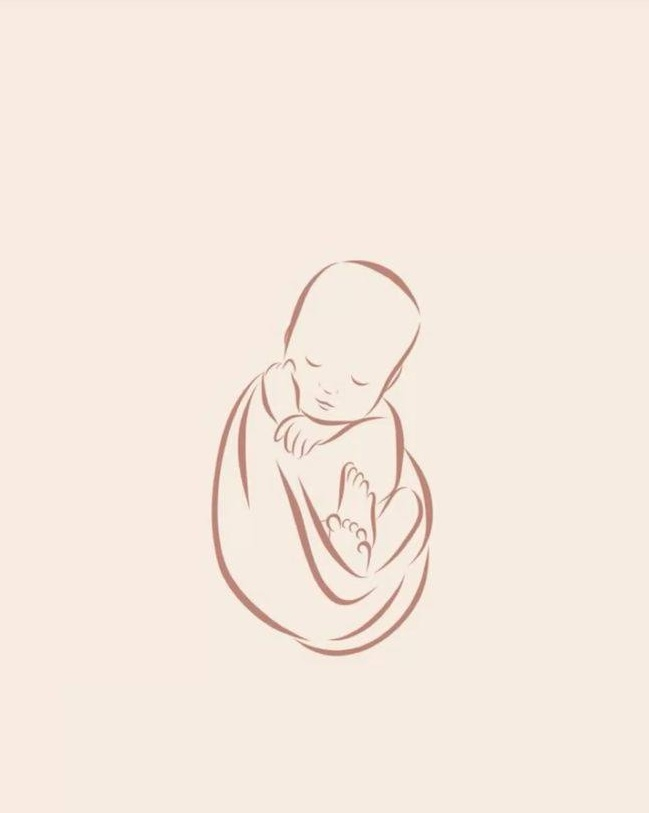
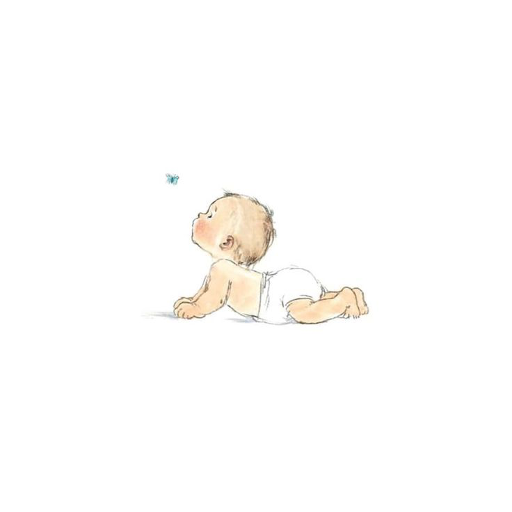
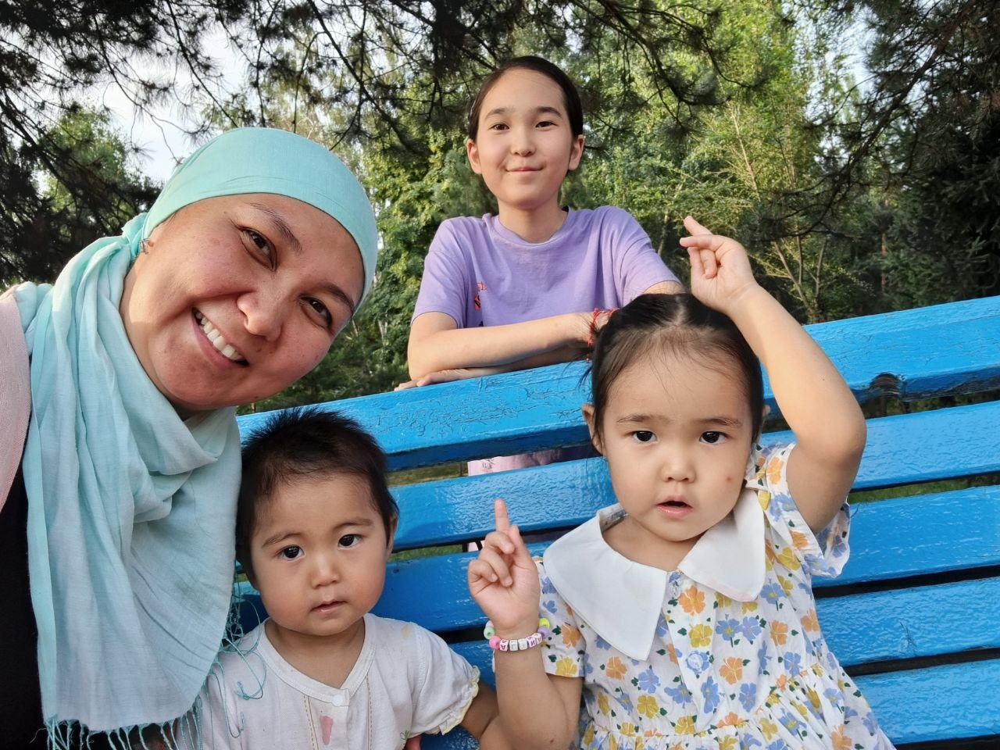

Айпери Сатыбалдиева
Помогаю женщинам убрать психологические барьеры на пути к материнству — бережно и с опорой на науку

Психология и репродуктивное здоровье:
ЧТО ГОВОРИТ НАУКА?
Исследования в области репродуктивной психосоматики подтверждают — ДА, психологическое состояние напрямую влияет на успех лечения.
Эффективность ЭКО
Согласно мета-анализам международных исследований, у пар, получающих психологическую поддержку, вероятность наступления беременности в циклах ЭКО и ИИ увеличивается в среднем на 45%.*
Снижение стресса
Программы по снижению стресса (Mind-Body) показывают впечатляющие результаты: в группах с психологическим сопровождением частота зачатия в 2 раза выше, чем в группах без него.
Профилактика «выгорания»
До 50% пар прекращают лечение после первой неудачи из-за эмоционального истощения. Психологическая помощь помогает сохранить ресурс и дойти до победного результата.
* Данные основаны на исследованиях Гарвардской медицинской школы и мета-анализах публикаций в журнале Human Reproduction.
Как это работает?
Хронический стресс переводит организм в режим «выживания», в котором репродуктивная система часто «отключается» как второстепенная.
Работа с психологом помогает:
- Снизить уровень кортизола, который может препятствовать наступлению беременности, имплантации эмбриона, успешному вынашиванию плода.
- Убрать «психологические блоки» и страхи, связанные с будущим материнством.
- Вернуть контроль над своей жизнью, перестав измерять её только циклами и анализами.
Моя задача — не просто поддержать вас в сложный период, но и помочь вашему телу стать максимально благоприятной средой для новой жизни.
Обо мне
Привет! Я Айпери, психолог с 8-ми летним стажем, а с 2023 года консультирую женщин с бесплодием, помогая устранить психологические барьеры и прийти к материнству.
Мой путь в перинатальную психологию начался не с университетской скамьи, а с 15 летней борьбы за право быть мамой. Я прошла через всё: множество врачей, бесконечные обследования, лечения, диагноз «бесплодие»; надежды, сменяющиеся отчаянием и долгие годы в состоянии депрессии. Я знаю, что чувствует женщина, когда вокруг все беременеют и рожают детей, а её мир как будто замер.
Сегодня я — счастливая мама. Мой путь показал: психологическое состояние — это не «приложение» к анализам, а фундамент, на котором строится успех каждой медицинской процедуры. Теперь я помогаю другим женщинам пройти эту дорогу без лишних травм, чувствуя профессиональную опору и возвращая себе право на счастье. Я не просто психолог. Я человек, который был на вашем месте и знает выход.
Психологическое благополучие женщины в такие непростые периоды так же важно, как и физическое здоровье. Я помогаю найти внутреннюю опору, когда кажется, что земля уходит из-под ног, и учу доверять себе и конечно же своему телу.


Образование
- АН ПОО «Международный университет» 2026 год — Перинатальная психология
- Европейская школа психологии 2018–2020 гг. — Психолог по методу Трансформации ментальных состояний
- МГИМО 2017–2018 гг. — Магистр права
Дополнительное образование
- Психологическая помощь при ЭКО — 2026
- Работа с утратой в перинатальном периоде — 2024
- Психологическое бесплодие у женщин: психосоматика как причина женского бесплодия — 2023
С чем работаю
Бесплодие
Иногда организм женщины блокирует зачатие из-за бессознательных страхов (вторичные выгоды, страх потери контроля, травмы прошлого). Вместе мы ищем ваши внутренние блоки и скрытые страхи, препятствующие наступлению материнства; и работаем над ними. Восстанавливаем ресурсное состояние тела, которое давно находится в стрессовом замирании. Моя роль как психолога - помочь вам выйти из режима «выживания» и переключить ресурсы организма на продолжение рода. Психолог работает не «вместо» врачей, а «вместе» с ними, повышая эффективность медицинских процедур.
Подготовка и сопровождение ЭКО
ЭКО – это колоссальная нагрузка на психоэмоциональную устойчивость женщины. Страх провала, эмоциональные качели, изматывающее ожидание ХГЧ. Вместе мы создадим «психологический кокон» вокруг вашего протокола, помогу снизить уровень тревоги, который мешает имплантации. Создадим ту самую психологическую - «принимающую» среду для зарождения в ней новой жизни.
Донорские программы
Сложные чувства по поводу генетической связи - «будет ли ребенок моим?», чувство вины, страх осуждения со стороны близких и общества. А что я скажу, когда он вырастит? Вместе с вами бережно работаем над принятием донорского материала. Меняем образ «чужеродного» в образ «своего», «дара судьбы», чтобы вы могли войти в материнство с чистым сердцем и полной уверенностью в своей роли матери.
Перинатальные потери
Горе после замершей беременности, выкидыша, неудачного протокола ЭКО или потери малыша в родах должно быть прожито правильно, в противном случае это будет влиять на дальнейшие успехи завести детей. Я сопровождаю в этом процессе проживания горя, чтобы оно не стало «застывшим». Помогу вам избавиться от чувства несправедливости, пустоты и страха, что это повторится снова. Это даст вам силы, внутренние ресурсы и психологическое разрешение на новую попытку и новую жизнь.
Материнство
Став матерью уже в прилично осознанном возрасте (в 32 года) я пережила на себе все сложности нового состояния - материнства. Ожидания от материнства могут не совпасть с реальностью, вы чувствуете вину или тревогу. Помогу вам адаптироваться в новой роли и получать радости от контакта с ребенком.
Также женщины иногда чувствуют непринятие своего малыша, об этом не принято говорить никому. У этого есть свои объяснения: возможно у нее был негативный опыт детско-родительских отношений. И здесь очень важно найти, и проработать каждый болезненный момент.
Тарифы
Каждая сессия длится 70–90 минут
Часто задаваемые вопросы
В: Врачи говорят, что я здорова, но беременность не наступает. Может ли это быть «в голове»?
О: Да, это называют психологическим бесплодием. Когда организм находится в состоянии хронического стресса или скрытых страхов, мозг подает сигнал «сейчас не время/небезопасно», и репродуктивная система «засыпает». Психолог работает над тем, чтобы найти и устранить эти внутренние блоки.
В: Как перестать думать только о планировании? Кажется, моя жизнь превратилась в ожидание овуляции.
О: Это состояние «зацикленности» изматывает психику. В терапии мы возвращаем вам вкус жизни вне диагнозов. Как ни парадоксально, но когда фокус внимания смещается со сверхзадачи на саму себя, шансы на успех возрастают.
В: Боюсь очередной неудачи в протоколе. Как пережить это ожидание ХГЧ?
О: Период ожидания — самый сложный. Я даю конкретные техники саморегуляции и телесные практики, которые помогают снизить уровень кортизола и прожить эти две недели без паники, сохраняя ресурс для себя и будущего малыша.
Дипломы и сертификаты


Сертификаты


В моей работе нет места оценкам или советам «как надо». Я использую классический метод психоанализа, мягкие техники релаксации и арт-терапию. Для меня важно, чтобы вы чувствовали себя услышанной и защищённой.